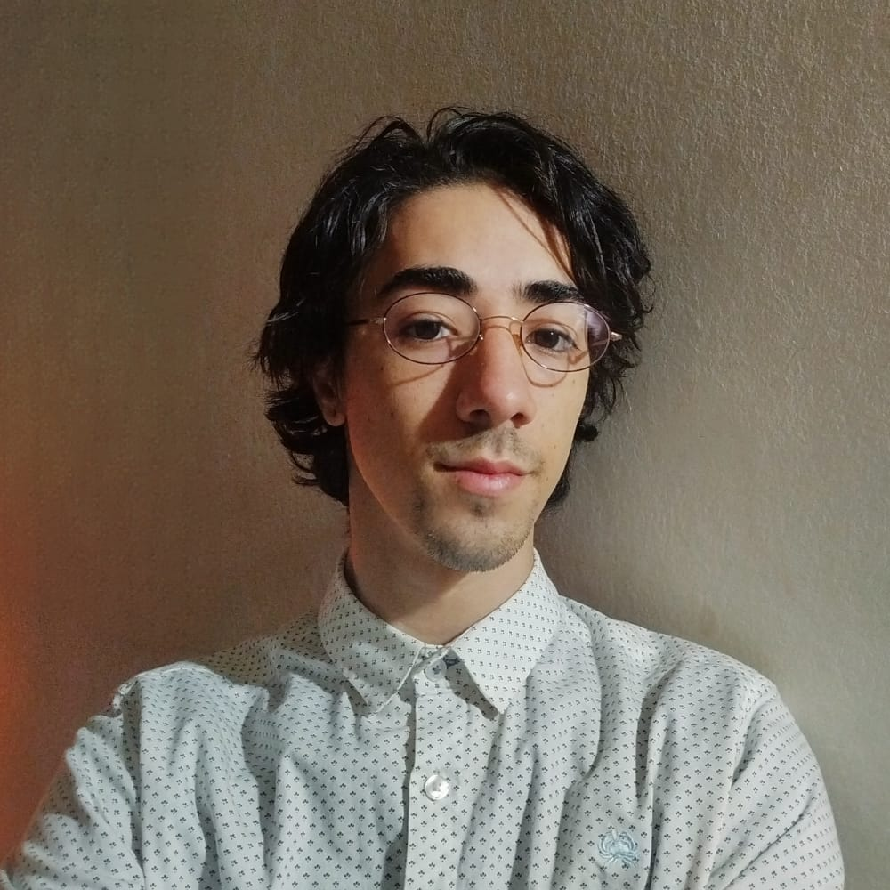

Desarrollador Full Stack
Desarrollador apasionado por la intersección entre el diseño estético y la ingeniería de precisión. Mi objetivo no es solo que una web se vea bien, sino que funcione como un motor de alta gama bajo el capó.
Con experiencia en arquitecturas modernas como Astro y React, me especializo en crear ecosistemas digitales escalables. Mi enfoque en TodoNerds se centra en eliminar la fricción técnica para que el negocio de mis clientes crezca sin límites.